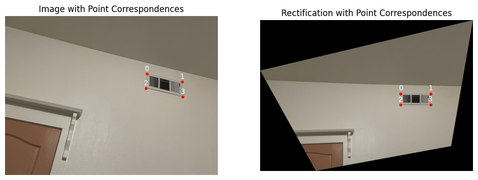
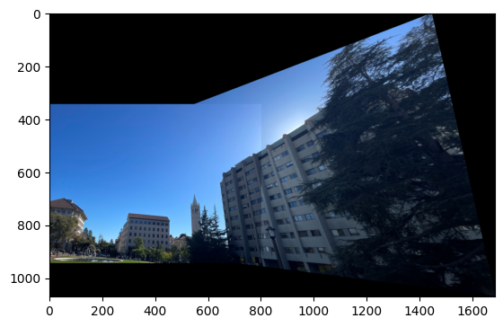
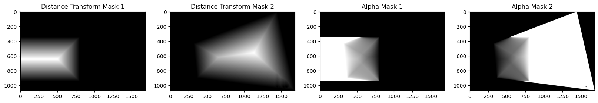

Shoot the Pictures
Acquire the images to be used on the projects by fix the center of projection (COP) and rotate the camera while capturing photos.

Acquire the images to be used on the projects by fix the center of projection (COP) and rotate the camera while capturing photos.
First, establishing point correspondences by mouse clicking with the tool from project 3.

To recover the parameters of the transformation, note that the transformation is a homography: \(Hp=p'\), where H is a 3x3 matrix with 8 degrees:
\[ \begin{bmatrix} a & b & c \\ d & e & f \\ g & h & 1 \end{bmatrix} \begin{bmatrix} x \\ y \\ 1 \end{bmatrix} = \begin{bmatrix} wx' \\ wy' \\ w \end{bmatrix} \]
Expanding the matrix multiplication, the linear systems are:
\[ \begin{bmatrix} x_1 & y_1 & 1 & 0 & 0 & 0 & -x_1'x_1 & -y_1'x_1 \\ 0 & 0 & 0 & x_1 & y_1 & 1 & -x_1'y_1 & -y_1'y_1 \\ x_2 & y_2 & 1 & 0 & 0 & 0 & -x_2'x_2 & -y_2'x_2 \\ 0 & 0 & 0 & x_2 & y_2 & 1 & -x_2'y_2 & -y_2'y_2 \\ &&&&...&&& \end{bmatrix} \begin{bmatrix} a \\ b \\ c \\ d \\ e \\ f \\ g \\ h \end{bmatrix} = \begin{bmatrix} x_1' \\ y_1' \\ x_2' \\ y_2' \\ ... \end{bmatrix} \]
To warp each image towards the reference image with homograph matrix, first, we compute the projected positions of the corners from Image 2 to determine the bounding box of the final warped image. Then, utilizing inverse warping and scipy.interpolate.griddata, we interpolate the pixel values from Image 2 to their new positions in the destination image.
To create image rectification, first marked the position of the four corners on the image, and then define the position of a matched rectangle. Use warpImage to produce the result.

After image warping, the naive overwriting would lead to strong edge artifacts:
To use weight averaging, first compute the distance transform with cv2.distanceTransform, and then compute the weighted linear combination of the two images by using the distance transforms as weights:
